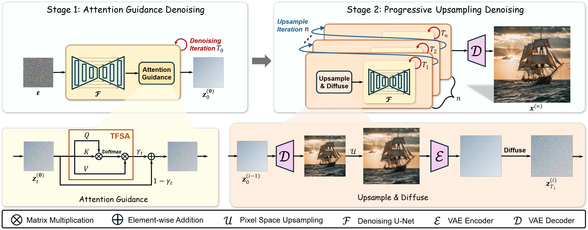
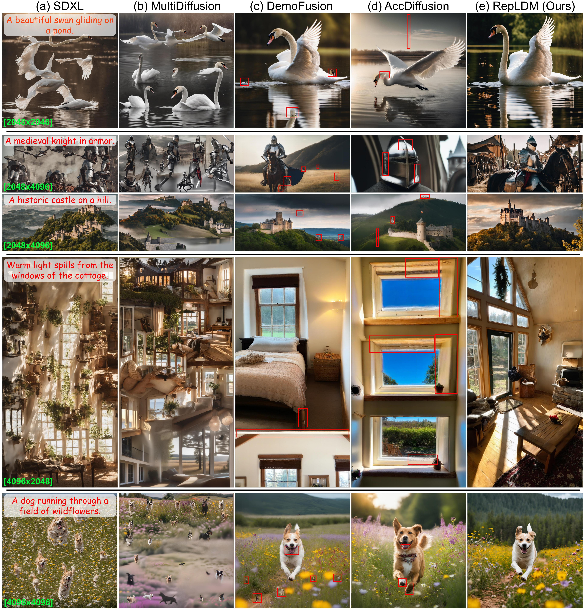

RepLDM: Reprogramming Pretrained Latent Diffusion Models
for High-Quality, High-Efficiency, High-Resolution Image Generation
NeurIPS 2025 Spotlight★
Boyuan Cao1 Jiaxin Ye1 Yujie Wei1 Hongming Shan*1
1 Fudan University
(* Corresponding Author)
[Paper]
[Code]
🔥🔥🔥 RepLDM is a training-free method for higher-resolution image generation,
enabling the 8k image generation!
RepLDM consists of two stages: (i) an Attention Guidance stage, and
(ii) a progressive upsampling stage.
Both of the components are training-free and can be seamlessly integrated with a wide range of latent diffusion models.

Abstract
While latent diffusion models (LDMs), such as Stable Diffusion, are designed for high-resolution image generation,
they often struggle with significant structural distortions when generating images at resolutions higher than their training one.
Instead of relying on extensive retraining, a more resource-efficient approach is to reprogram the pretrained model for high-resolution (HR) image generation;
however, existing methods often result in poor image quality and long inference time.
We introduce RepLDM, a novel reprogramming framework for pretrained LDMs that enables
high-quality, high-efficiency, high-resolution image generation; see Fig. 1 (the teaser image).
RepLDM consists of two stages:
(i) an attention guidance stage, which generates a latent representation of a higher-quality training-resolution image using a novel parameter-free self-attention mechanism
to enhance the structural consistency; and
(ii) a progressive upsampling stage, which progressively performs upsampling in pixel space to mitigate the severe artifacts caused by latent space upsampling.
The effective initialization from the first stage allows for denoising at higher resolutions with significantly fewer steps, improving the efficiency.
Extensive experimental results demonstrate that RepLDM significantly outperforms state-of-the-art methods in both quality and efficiency for HR image generation,
underscoring its advantages for real-world applications.
Methodology
RepLDM consists of two stages:
(i) an Attention Guidance stage,
which enriches color vibrancy and fine-grained details to enhance visual fidelity;
(ii) a progressive upsampling stage,
which performs upsampling in pixel-space to upscale images while refining textures in latent space to suppress artifacts.
Both components are training-free and can be seamlessly integrated with a wide range of latent diffusion models.

Qualitative Comparison
Image qualitative comparisons with other baselines. Our method generates both 2048x2028 and 4096x4096 vivid images with better content coherence and local details.

BibTex
If you find this paper useful in your research, please consider citing:
@inproceedings{caorepldm,
title={RepLDM: Reprogramming Pretrained Latent Diffusion Models for High-Quality, High-Efficiency, High-Resolution Image Generation},
author={Cao, Boyuan and Ye, Jiaxin and Wei, Yujie and Shan, Hongming},
booktitle={The Thirty-ninth Annual Conference on Neural Information Processing Systems}
}